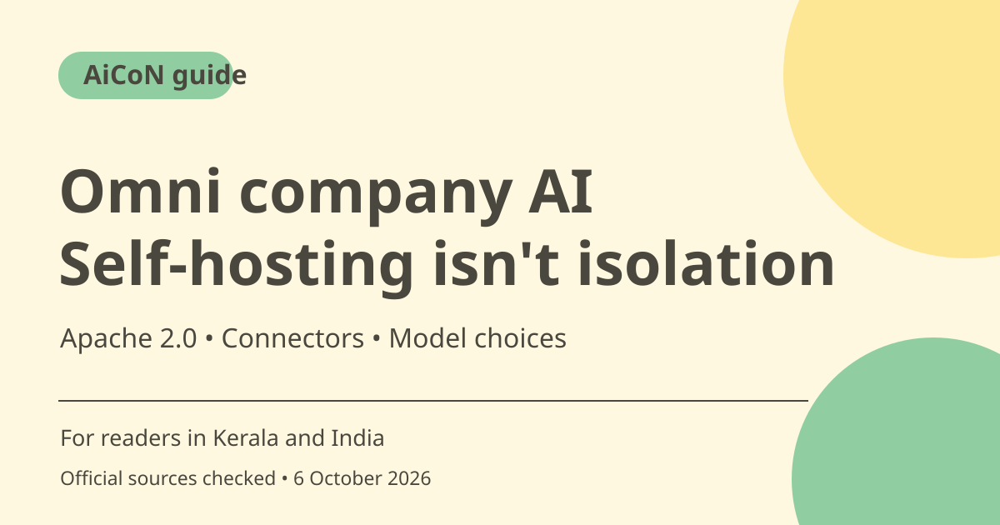

Omni company AI: self-hosting, permissions and model costs
Omni is an Apache-2.0 licensed company AI system for working across business tools. It can be self-hosted with configurable model providers and permission-aware context. Self-hosting does not guarantee all information stays on your server if a remote model or external integration receives it.

What is Omni?
The official site and repository describe an agent that gathers company context and carries out tasks across existing tools. Listed integrations include Google Workspace, Slack, Jira, Confluence and HubSpot, among others. A logo or connector listing is not proof that every action your company needs is supported; verify the connector's current capabilities before committing to it.
Who should evaluate it in India?
A technical team that can maintain servers, credentials and access rules can assess self-hosting. It is not a simple consumer app for a non-technical user. Start with a small test group and non-sensitive documents, then verify relevance, permissions and actions against actual source systems before widening access.
Permission-aware context is a design claim to test
The repository says indexed information is scoped by inherited source permissions. That matters for company-wide search, but you should test access changes, private documents and users with different roles in your environment. Retrieval permission and authority to send, edit or disclose information are separate questions. Do not assume an indexed document authorises every subsequent action.
Deployment and licence
The official repository lists Docker Compose for single-server deployment and Terraform for AWS/GCP production deployments. Apache 2.0 permits use subject to its conditions and notices. You still operate the server, upgrades, monitoring and backups. This guide does not invent a universal hardware minimum or promise a maintenance-free installation.
Data can leave through models and tools
Omni supports multiple model providers and self-hosted options. If you select a commercial remote API, task context can be processed by that provider under its terms. Connected business services are also external systems. Review data flows, retention, logs and secrets rather than repeating the broad claim that self-hosting always keeps all company data on your own machines.
Cloud and spending uncertainty
The homepage offers notifications for Omni Cloud availability. This is not proof of an available hosted subscription or a public price. Self-hosted operation can incur server, storage and model charges. The product's example cost dashboard is not a quote for your company. Estimate using your actual traffic, providers and deployment before rollout.
How to use it, step by step
- Open the official Omni site, docs and repository; confirm the licence and maintained deployment route.
- List the business sources and actions you need and check each connector's supported scope.
- Prepare a small test deployment using the current Docker Compose guide or a suitable supported infrastructure route.
- Choose models deliberately and map which context reaches remote providers. Keep secrets in secure configuration, not chat or source code.
- Test with users who have different permissions and confirm private-source content is not exposed across roles.
- Review actual outputs and proposed edits/sends. Require appropriate approval for consequential actions and test access revocation.
- Estimate infrastructure/model costs, add backups and monitoring, then expand only after the deployment behaves correctly. Treat Omni Cloud notifications as a waitlist, not a purchase offer.
Cost, eligibility and limits
| Source licence | Apache 2.0 in the official repository. Licence conditions and notices apply. |
|---|---|
| Self-hosting | Server, storage, maintenance and model costs remain. No fixed free-operation promise. |
| Model privacy | Remote provider choices affect where context is processed. Self-hosted app does not imply local-only inference. |
| Hosted offer | Checked homepage asks for notifications when Omni Cloud is available; current hosted price/access not established. |
Frequently asked questions
Will all data stay local automatically?
No. Your model and integration choices determine where context can be sent.
Is the software open source?
The official repository lists Apache License 2.0.
Is Omni Cloud available to buy now?
The checked homepage offers availability notifications. A public hosted plan was not established.
Official sources
Checked 6 October 2026. Features and prices can change. This is a guide, not a personal product test.